Stations <- read.csv("temp_stations_NA.csv", check.names = FALSE)
Stations <- Stations %>% mutate(AQSID = as.character(AQSID))
Temp_st_pvt <- read.csv("Temp_data_imputed.csv", check.names = FALSE)
Temp_st <- Temp_st_pvt %>%
pivot_longer(
cols = -Valid.Date,
names_to = "AQSID",
values_to = "Temp"
) %>%
mutate(Valid.Date = as.Date(Valid.Date, format = "%Y-%m-%d"),
Day = yday(Valid.Date),
AQSID = as.character(AQSID))
Temp.st <- Temp_st %>%
filter(Day %in% seq(90, 97, 1)) %>%
left_join(Stations, by = c("AQSID")) %>%
dplyr::select(Valid.Date, AQSID, Temp, Day, X, Y)
dataTemp.ST <- Temp.st %>%
arrange(AQSID, Valid.Date) %>%
dplyr::select(Temp)
time.index <- sort(unique(Temp.st$Valid.Date))
Temp.stations.sp <- Stations %>% arrange(AQSID)
Temp.stations.sp <- SpatialPoints(Temp.stations.sp[,c("X", "Y")])
TEMP.ST <- STFDF(Temp.stations.sp, time.index, dataTemp.ST)Espacio Tiempo
En este apartado se trabajará con los 8 días anteiores al 15 de abril de 2024.
Análisis Descriptivo
Primero realizamos la carga de los datos y las estaciones. Los datos se encuentran organizados de la siguiente forma:
| Valid.Date | AQSID | Temp | Day | X | Y |
|---|---|---|---|---|---|
| 2024-03-30 | 480271045 | 24.0 | 90 | 1744479 | 7447518 |
| 2024-03-30 | 480271047 | 23.5 | 90 | 1720906 | 7443160 |
| 2024-03-30 | 480290032 | 24.1 | 90 | 1633570 | 7266958 |
| 2024-03-30 | 480290052 | 23.1 | 90 | 1638725 | 7280038 |
| 2024-03-30 | 480290055 | 23.7 | 90 | 1652022 | 7255235 |
| 2024-03-30 | 480290059 | 24.2 | 90 | 1663815 | 7240764 |
| 2024-03-30 | 480290501 | 24.8 | 90 | 1623771 | 7240383 |
| 2024-03-30 | 480290502 | 22.2 | 90 | 1632732 | 7290822 |
| 2024-03-30 | 480290622 | 24.6 | 90 | 1661634 | 7249348 |
| 2024-03-30 | 480290677 | 24.1 | 90 | 1637522 | 7256897 |
Y, para estos ocho días, se tienen las siguientes observaciones.
Code
stplot(TEMP.ST, main = "Temperatura en ocho días consecutivos")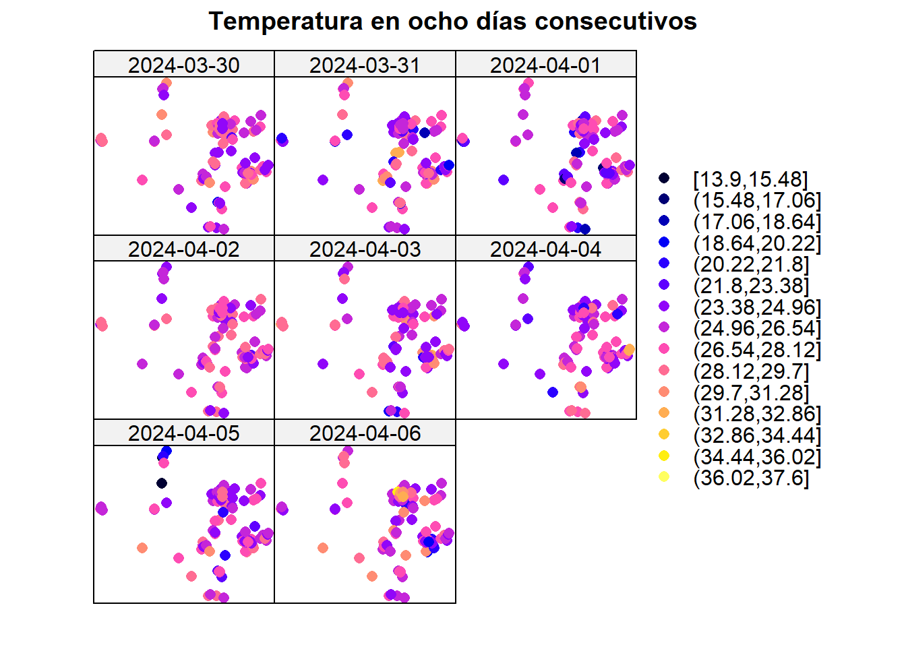
Estacionariedad
Se analiza la estacionariedad de la media en estas ocho estaciones. Inicialmente, la temperatura presentaba tendencia espacial, por lo que se ajustó un modelo general que pudiese servir para todos los tiempos.
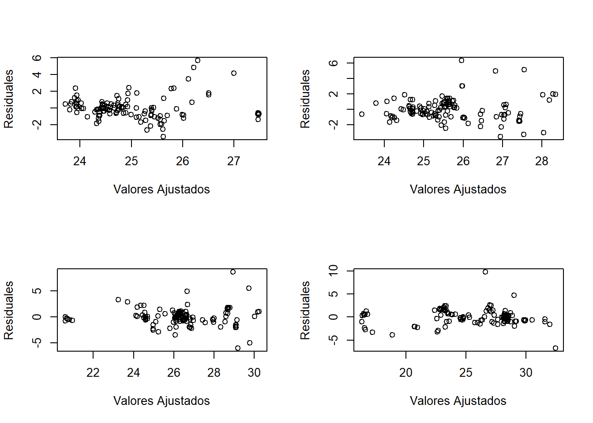
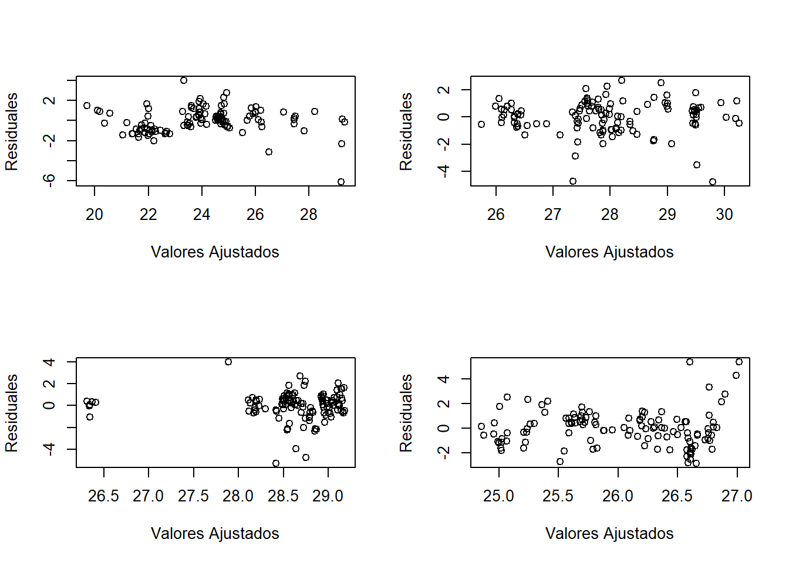
De esta forma se puede presenciar una estacionariedad general en los distintos tiempos que se están analizando.
Además, se presentan el mapa de calor y las series por estación. En el primero, podemos ver que en el eje X se presentan algunas de las estaciones, el eje Y representa las fechas consideradas y el color indicaría la temperatura. En el segundo gráfico podemos ver que las series no presentan tendencia marcada, indicando además un comportamiento similar de la temperatura en estas veinte estaciones.
IDs <- unique(Stations$AQSID)
sel <- NULL; for(i in 1:20) sel<-c(sel,which(IDs==IDs[i]))
stplot(TEMP.ST[sel, "2024-03-31::2024-04-14", "Temp"], mode="xt", scaleX=0,
col.regions=terrain.colors(100), main = "Temperatura")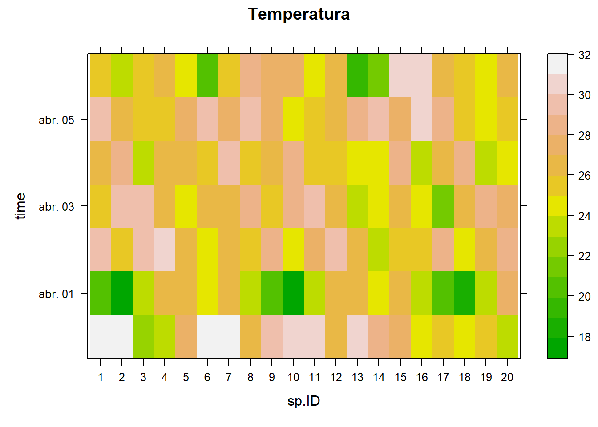
stplot(TEMP.ST[sel, "2024-03-31::2024-04-14", "Temp"], mode="ts",
main = "Temperatura")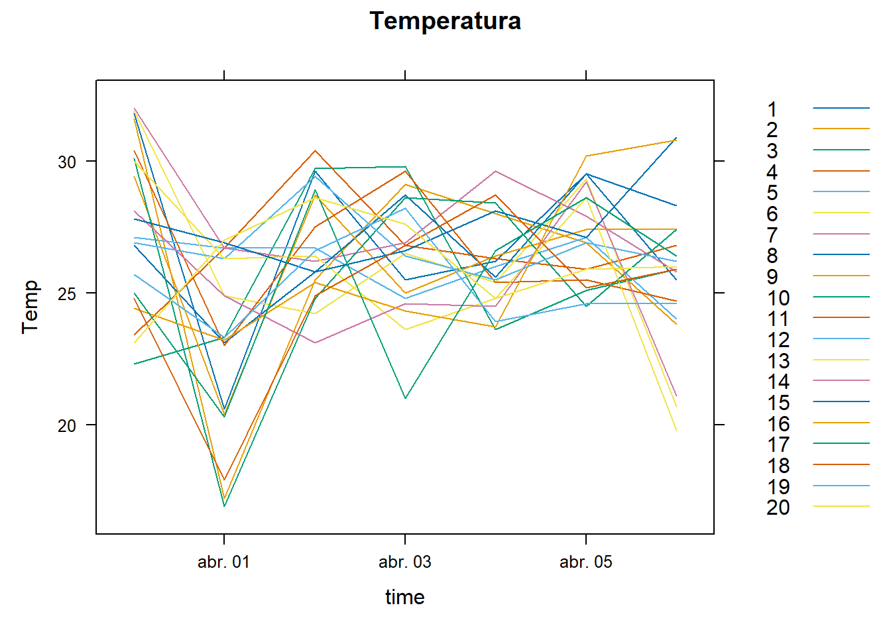
Semivariograma
A continuación se presenta el semivariograma empírico obtenido con la librería GeoModels.
coordinates(Temp.st) <- ~ X + Y
maxdist <- max(dist(coordinates(Temp.st)))
Temp.st.res <- as.data.frame(Temp.st) %>%
group_by(Day) %>%
mutate(Temp = resid(lm(Temp ~ X + Y + I(X^2)))) %>%
ungroup() # se trabaja con los residuales
geoMatrix <- Temp.st.res %>% # los datos se necesitan como matriz
arrange(Day, AQSID) %>%
select(Day, AQSID, Temp) %>%
tidyr::pivot_wider(names_from = AQSID, values_from = Temp) %>%
arrange(Day) %>%
select(-Day) %>%
as.matrix()
geovgm <- GeoVariogram(data = geoMatrix,
coordx = Stations[,c("X", "Y")],
coordt = unique(Temp.st$Day - min(Temp.st$Day)),
distance = "Eucl",
type= "variogram",
maxdist = 1/3*maxdist)
plot(geovgm)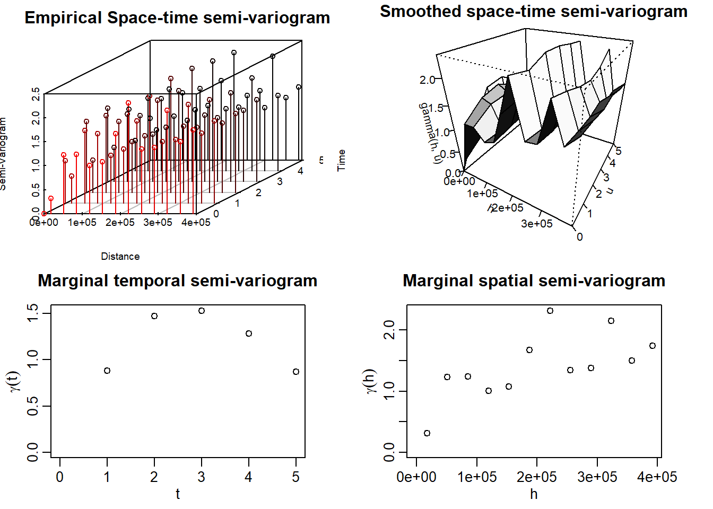
Se puede ver que, en el semivariograma temporal existe una estructura de dependencia. De igual forma, espacialmente se puede presenciar un nugget pequeño y la posible silla alrededor de 2.
Estimación Teórica del Semivariograma
Para llevar a cabo la estimación, se usó la función GeoFit de GeoModels. En la ayuda de esta función se especifican distintos modelos espacio tiempo separables y no separables. Se realizó el ajuste de varios de ellos, tomando como valores iniciales de escala los que se podían visualizar de los semivariogramas marginales.
Modelos No Separables
A pesar de que se ajustaron siete modelos no separables, el algoritmo de todos ellos no convergió muy seguramente. Solo convergieron de forma segura los modelos Gneiting y Mátern Mátern.
A continuación se presenta la estimación.
Code
mean_est <- 0; var_est <- var(as.numeric(geoMatrix))
##### Gneiting ----
CorrParam("Gneiting")
init.ST_gne <- list(power_s = 2,
power_t = 0.8,
scale_s = 2e5,
scale_t = 3,
sep = 0.5,
sill = var_est,
nugget = 0.1)
fixed.ST_gne <- list(mean = 0)
GeoCovmatrix(corrmodel = "Gneiting",
coordx = Stations[,c("X", "Y")],
coordt = 1:5,
model = "Gaussian",
param = init.ST_gne)
lwr <- list(power_s = 1e-4,
power_t = 1e-4,
scale_s = 0,
scale_t = 0,
sep = 0,
sill = 1/2,
nugget = 0)
upr <- list(power_s = 2,
power_t = 2,
scale_s = Inf,
scale_t = Inf,
sep = 1,
sill = Inf,
nugget = 1)
geofit_gne <- GeoFit(data = geoMatrix,
coordx = Stations[,c("X", "Y")],
coordt = unique(Temp.st$Day - min(Temp.st$Day)),
distance = "Eucl",
maxtime = 4, maxdist = maxdist/3,
model = "Gaussian",
corrmodel = "Gneiting",
start = init.ST_gne,
fixed = fixed.ST_gne,
optimizer = "L-BFGS-B",
lower = lwr,
upper = upr)
geofit_gne$logCompLik #-1376261
geocgvm_gne <- GeoCovariogram(fitted = geofit_gne,
answer.vario = TRUE,
show.vario = TRUE,
add.vario = TRUE,
vario = geovgm,
invisible = TRUE)
##### Iacocesare ----
CorrParam("Iacocesare")
init.ST_iac <- list(power2 = 3,
power_s = 2,
power_t = 0.8,
scale_s = 2e5,
scale_t = 3,
sill = var_est,
nugget = 0.1)
fixed.ST_iac <- list(mean = 0)
lwr.Iac <- list(power2 = 1e-4,
power_s = 1e-4,
power_t = 1e-4,
scale_s = 0,
scale_t = 0,
sill = 1/2,
nugget = 0.1)
upr.Iac <- list(power2 = 2,
power_s = 2,
power_t = 2,
scale_s = Inf,
scale_t = Inf,
sill = Inf,
nugget = 1)
geofit_iac <- GeoFit(data = geoMatrix,
coordx = Stations[,c("X", "Y")],
coordt = unique(Temp.st$Day - min(Temp.st$Day)),
distance = "Eucl",
maxtime = 4, maxdist = maxdist/3,
model = "Gaussian",
corrmodel = "Iacocesare",
start = init.ST_iac,
fixed = fixed.ST_iac,
optimizer = "L-BFGS-B",
lower = lwr.Iac,
upper = upr.Iac)
geofit_iac$logCompLik # -1376174
geocgvm_Iac <- GeoCovariogram(fitted = geofit_iac,
answer.vario = TRUE,
show.vario = TRUE,
add.vario = FALSE,
vario = geovgm,
invisible = TRUE)
##### Porcu ----
CorrParam("Porcu")
init.ST_Por <- list(power_s = 2,
power_t = 0.8,
scale_s = 2e5,
scale_t = 3,
sill = var_est,
nugget = 0.1,
sep = 0.5)
fixed.ST_Por <- list(mean = 0)
lwr.Por <- list(power_s = 1e-4,
power_t = 1e-4,
scale_s = 0,
scale_t = 0,
sill = 1/2,
nugget = 0.1,
sep = 0)
upr.Por <- list(power_s = 2,
power_t = 2,
scale_s = Inf,
scale_t = Inf,
sill = Inf,
nugget = 1,
sep = 1)
geofit_Por <- GeoFit(data = geoMatrix,
coordx = Stations[,c("X", "Y")],
coordt = unique(Temp.st$Day - min(Temp.st$Day)),
distance = "Eucl",
maxtime = 4, maxdist = maxdist/3,
model = "Gaussian",
corrmodel = "Porcu",
start = init.ST_Por,
fixed = fixed.ST_Por,
optimizer = "L-BFGS-B",
lower = lwr.Por,
upper = upr.Por)
geofit_Por$logCompLik # -1376660
geocgvm_Por <- GeoCovariogram(fitted = geofit_Por,
answer.vario = TRUE,
show.vario = TRUE,
add.vario = TRUE,
vario = geovgm,
invisible = TRUE)
###### Porcu 1 ----
CorrParam("Porcu")
init.ST_Por1 <- list(power_s = 2,
power_t = 0.8,
scale_s = 2e5,
scale_t = 3,
sill = var_est,
nugget = 0.1,
sep = 0.5)
fixed.ST_Por1 <- list(mean = 0)
lwr.Por1 <- list(power_s = 1e-4,
power_t = 1e-4,
scale_s = 0,
scale_t = 0,
sill = 1/2,
nugget = 0.1,
sep = 0)
upr.Por1 <- list(power_s = 2,
power_t = 2,
scale_s = Inf,
scale_t = Inf,
sill = Inf,
nugget = 1,
sep = 1)
geofit_Por1 <- GeoFit(data = geoMatrix,
coordx = Stations[,c("X", "Y")],
coordt = unique(Temp.st$Day - min(Temp.st$Day)),
distance = "Eucl",
maxtime = 4, maxdist = maxdist/3,
model = "Gaussian",
corrmodel = "Porcu1",
start = init.ST_Por1,
fixed = fixed.ST_Por1,
optimizer = "L-BFGS-B",
lower = lwr.Por1,
upper = upr.Por1)
geofit_Por1$logCompLik # -1374162
geocgvm_Por1 <- GeoCovariogram(fitted = geofit_Por1,
answer.vario = TRUE,
show.vario = TRUE,
add.vario = TRUE,
vario = geovgm,
invisible = TRUE)
##### Gneiting_mat_S ----
CorrParam("Gneiting_mat_S")
init.ST_GMS <- list(power_t = 0.8,
power2_t = 2,
scale_s = 2e5,
scale_t = 3,
smooth_s = 2,
sill = var_est,
nugget = 0.1,
sep = 0.5)
fixed.ST_GMS <- list(mean = 0)
GeoCovmatrix(corrmodel = "Gneiting_mat_S",
coordx = Stations[,c("X", "Y")],
coordt = 1:5,
model = "Gaussian",
param = init.ST_GMS)
lwr.GMS <- list(power_t = 1e-4,
power2_t = 1e-4,
scale_s = 0,
scale_t = 0,
smooth_s = 1e-4,
sill = 0,
nugget = 1e-4,
sep = 0)
upr.GMS <- list(power_t = 2,
power2_t = 2,
scale_s = Inf,
scale_t = Inf,
smooth_s = Inf,
sill = Inf,
nugget = 2,
sep = 1)
geofit_GMS <- GeoFit(data = geoMatrix,
coordx = Stations[,c("X", "Y")],
coordt = unique(Temp.st$Day - min(Temp.st$Day)),
distance = "Eucl",
maxtime = 4, maxdist = maxdist/3,
model = "Gaussian",
corrmodel = "Gneiting_mat_S",
start = init.ST_GMS,
fixed = fixed.ST_GMS,
optimizer = "L-BFGS-B",
lower = lwr.GMS,
upper = upr.GMS)
geofit_GMS$logCompLik # -1376660
geocgvm_GMS <- GeoCovariogram(fitted = geofit_GMS,
answer.vario = TRUE,
show.vario = TRUE,
add.vario = TRUE,
vario = geovgm,
invisible = TRUE)
##### Gneiting_mat_T ----
CorrParam("Gneiting_mat_T")
init.ST_GMT <- list(power_t = 0.8,
power2_t = 2,
scale_s = 2e5,
scale_t = 3,
smooth_s = 2,
sill = var_est,
nugget = 0.1,
sep = 0.5)
fixed.ST_GMT <- list(mean = 0)
GeoCovmatrix(corrmodel = "Gneiting_mat_S",
coordx = Stations[,c("X", "Y")],
coordt = 1:5,
model = "Gaussian",
param = init.ST_GMT)
lwr.GMT <- list(power_t = 1e-4,
power2_t = 1e-4,
scale_s = 0,
scale_t = 0,
smooth_s = 1e-4,
sill = 0,
nugget = 1e-4,
sep = 0)
upr.GMT <- list(power_t = 2,
power2_t = 2,
scale_s = Inf,
scale_t = Inf,
smooth_s = Inf,
sill = Inf,
nugget = 2,
sep = 1)
geofit_GMT <- GeoFit(data = geoMatrix,
coordx = Stations[,c("X", "Y")],
coordt = unique(Temp.st$Day - min(Temp.st$Day)),
distance = "Eucl",
maxtime = 4, maxdist = maxdist/3,
model = "Gaussian",
corrmodel = "Gneiting_mat_S",
start = init.ST_GMT,
fixed = fixed.ST_GMT,
optimizer = "L-BFGS-B",
lower = lwr.GMT,
upper = upr.GMT)
geofit_GMT$logCompLik # -1376660
geocgvm_GMT <- GeoCovariogram(fitted = geofit_GMT,
answer.vario = TRUE,
show.vario = TRUE,
add.vario = TRUE,
vario = geovgm,
invisible = TRUE)
##### Matern_Matern_nosep ----
CorrParam("Matern_Matern_nosep")
init.ST_Mat_Mat <- list(scale_s = 2e5,
scale_t = 3,
smooth_s = 1,
smooth_t = 1,
sill = var_est,
nugget = 0.1,
sep = 0.5)
fixed.ST <- list(mean = 0)
GeoCovmatrix(corrmodel = "Matern_Matern_nosep",
coordx = Stations[,c("X", "Y")],
coordt = 1:5,
model = "Gaussian",
param = init.ST_Mat_Mat)
lwr.Mat_Mat <- list(scale_s = 0,
scale_t = 0,
smooth_s = 1e-10,
smooth_t = 1e-10,
sill = 1/2,
nugget = 0.01,
sep = 0)
upr.Mat_Mat <- list(scale_s = Inf,
scale_t = Inf,
smooth_s = Inf,
smooth_t = Inf,
sill = Inf,
nugget = 2,
sep = 1)
geofit_Mat_Mat <- GeoFit(data = geoMatrix,
coordx = Stations[,c("X", "Y")],
coordt = unique(Temp.st$Day - min(Temp.st$Day)),
distance = "Eucl",
maxtime = 4, maxdist = maxdist/3,
model = "Gaussian",
corrmodel = "Matern_Matern_nosep",
start = init.ST_Mat_Mat,
fixed = fixed.ST,
optimizer = "L-BFGS-B",
lower = lwr.Mat_Mat,
upper = upr.Mat_Mat)
geofit_Mat_Mat$logCompLik #-1375451
geocgvm_Mat_Mat <- GeoCovariogram(fitted = geofit_Mat_Mat,
answer.vario = TRUE,
show.vario = TRUE,
add.vario = TRUE,
vario = geovgm,
invisible = TRUE)
##### Multiquadric_st ----
CorrParam("Multiquadric_st")
init.ST_Mul <- list(power_s = 2,
power_t = 0.8,
scale_s = 2e5,
scale_t = 3,
sill = var_est,
nugget = 0.1)
fixed.ST_Mul <- list(mean = 0)
lwr.Mul <- list(power_s = 1e-4,
power_t = 1e-4,
scale_s = 0,
scale_t = 0,
sill = 1/2,
nugget = 0.001)
upr.Mul <- list(power_s = 2,
power_t = 2,
scale_s = Inf,
scale_t = Inf,
sill = Inf,
nugget = 2)
geofit_Mul <- GeoFit(data = geoMatrix,
coordx = Stations[,c("X", "Y")],
coordt = unique(Temp.st$Day - min(Temp.st$Day)),
distance = "Eucl",
maxtime = 4, maxdist = maxdist/3,
model = "Gaussian",
corrmodel = "Multiquadric_st",
start = init.ST_Mul,
fixed = fixed.ST_Mul,
optimizer = "L-BFGS-B",
lower = lwr.Mul,
upper = upr.Mul)
geofit_Mul$logCompLik # -1376779
geocgvm_Mul <- GeoCovariogram(fitted = geofit_Mul,
show.vario = TRUE,
vario = geovgm,
invisible = TRUE)Por motivos de eficiencia, se guardaron los resultados de estos modelos en un archivo aparte. Primero se muestra el semivariograma teórico obtenido con el modelo Mátern Mátern
load("geofitST.RData")
GeoCovariogram(fitted = geofitST$MatMat,
answer.vario = TRUE,
show.vario = TRUE,
add.vario = TRUE,
vario = geovgm,
invisible = TRUE)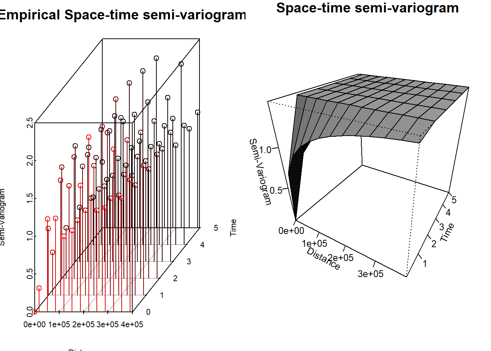
Y también del modelo Gneiting:
GeoCovariogram(fitted = geofitST$Gneiting,
answer.vario = TRUE,
show.vario = TRUE,
add.vario = TRUE,
vario = geovgm,
invisible = TRUE)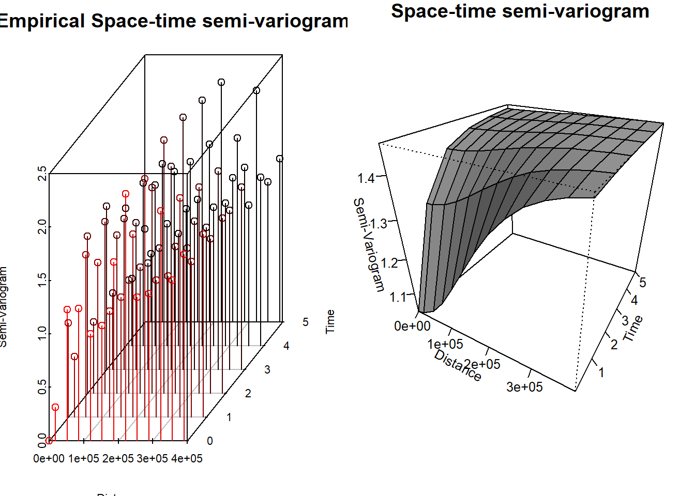
Y se resumen sus log–verosimilitudes compuestas:
| Log-Verosimilitud Compuesta | |
|---|---|
| Gneiting | -1376261 |
| MatMat | -1375451 |
A pesar de que con el modelo Mátern Mátern obtenemos una log–verosimilitud mayor, al intentar realizar kriging espacio temporal, este da resultados que no tienen mucho sentido. Por lo tanto, se procede al análisis con el modelo Gneiting.
Kriging Espacio Tiempo
Se va a realizar kriging espacio tiempo con el modelo Gneiting. Los parámetros obtenidos fueron los siguientes:
best_pars <- data.frame(unlist(geofitST$Gneiting$param))
best_pars %>%
kable(format = "pandoc",
digits = 4,
align = 'c',
escape = FALSE,
caption = "Parámetros del modelo escogido",
col.names = "Estimación")| Estimación | |
|---|---|
| nugget | 7.1340e-01 |
| power_s | 2.0000e+00 |
| power_t | 2.0000e+00 |
| scale_s | 2.0000e+05 |
| scale_t | 7.8320e-01 |
| sep | 0.0000e+00 |
| sill | 1.4624e+00 |
Se carga el grid para poder realizar la predicción. Además, se considerarán tres horizontes.
grid <- read.csv("grid.csv", check.names = FALSE)
loc_to_pred <- as.matrix(as.data.frame(grid))
times_to_pred <- 9:11Se realiza el kriging espacio tiempo con ayuda de la función GeoKrige. De igual forma, por eficiencia, se guardaron los resultados en un archivo y se importan para su análisis.
Code
ST.Krige <- GeoKrig(estobj = geofitST$Gneiting,
loc = loc_to_pred,
time = times_to_pred,
mse = TRUE)Se muestran los resultados a continuación.
preds_ST <- read.csv("kriging.ST.csv", check.names = FALSE)
Temp.st.or <- as.data.frame(Temp.st) %>%
arrange(Day, AQSID) %>%
select(Day, AQSID, Temp) %>%
tidyr::pivot_wider(names_from = AQSID, values_from = Temp) %>%
arrange(Day) %>%
select(-Day) %>%
as.matrix()
t1 <- as.data.frame(Temp.st) %>%
dplyr::filter(Day == 90) %>%
lm(Temp ~ X + Y + I(X^2), data = .)
mu.temp <- function(coefs, X, Y){
beta0 <- coefs[1]
beta1 <- coefs[2]
beta2 <- coefs[3]
beta3 <- coefs[4]
beta0 + beta1 * X + beta2 * Y + beta3 * X^2
}
preds.mu <- mu.temp(coef(t1), loc_to_pred[,1], loc_to_pred[,2])
grid_ST <- grid
grid_ST$t1 <- preds_ST$t1 + preds.mu
grid_ST$t2 <- preds_ST$t2 + preds.mu
grid_ST$t3 <- preds_ST$t3 + preds.mu
grid_ST <- cbind(grid_ST, preds_ST[,c("mse1", "mse2", "mse3")])
pred_vars <- paste0("t", 1:3)
mse_vars <- paste0("mse", 1:3)
coordinates(grid_ST) <- ~ X+ Y
plot_list <- list() # para guardar las figuras
for (i in 1:3) {
pred_var <- pred_vars[i]
mse_var <- mse_vars[i]
# Predicción
rng_pred <- range(grid_ST[[pred_var]], na.rm = TRUE)
at_pred <- pretty(rng_pred, n = 8)
p_pred <- spplot(
grid_ST, pred_var,
colorkey = list(
right = list(
fun = draw.colorkey,
args = list(
key = list(
at = at_pred,
col = magma(100),
labels = list(at = at_pred)
)
)
)
),
col.regions = magma(100),
main = paste("Predicción Temperatura t =", i)
)
## --- MSE ---
rng_mse <- range(grid_ST[[mse_var]], na.rm = TRUE)
at_mse <- pretty(rng_mse, n = 8)
p_mse <- spplot(
grid_ST, mse_var,
colorkey = list(
right = list(
fun = draw.colorkey,
args = list(
key = list(
at = at_mse,
col = inferno(100),
labels = list(at = at_mse)
)
)
)
),
col.regions = inferno(100),
main = paste("Error de Predicción t =", i)
)
gridExtra::grid.arrange(p_pred, p_mse, ncol = 2)
plot_list[[paste0("t", i)]] <- list(pred = p_pred, mse = p_mse)
}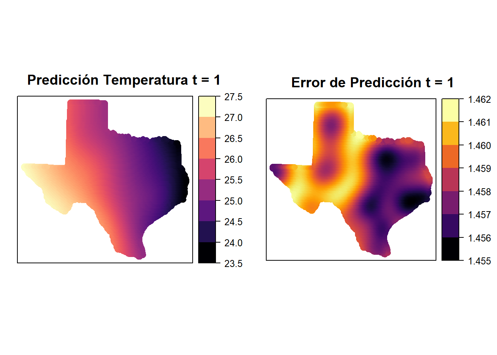
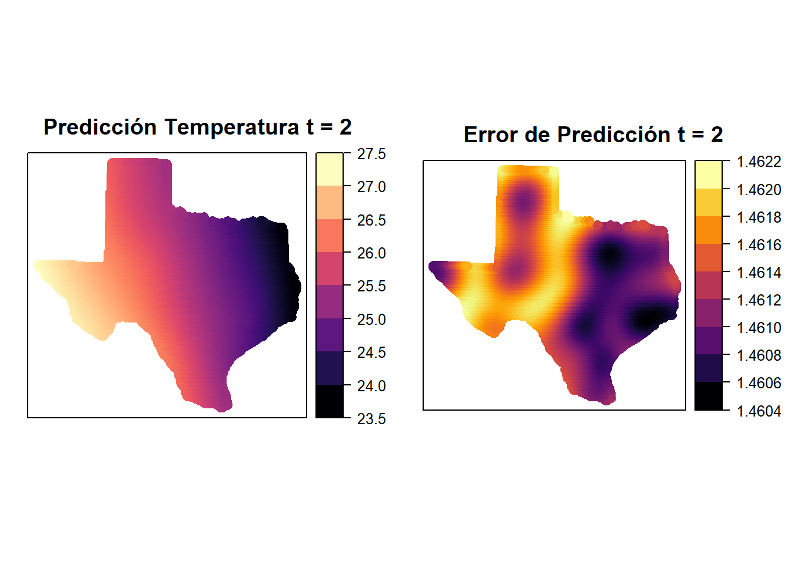
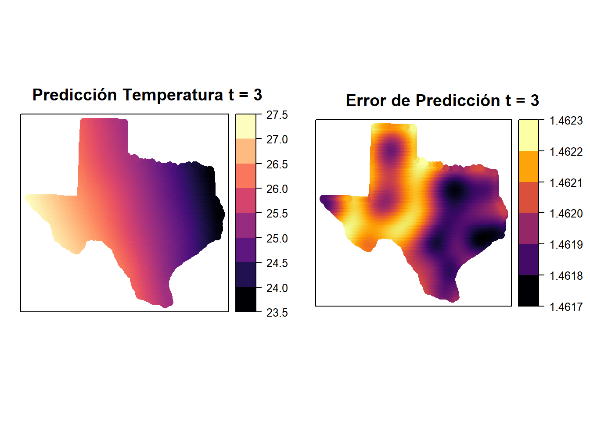
Primero, podemos ver que en los lugares donde hay estaciones, el error es menor, lo cual es de esperar. Por otro lado, las predicciones parecen no cambiar mucho en estos tres días.